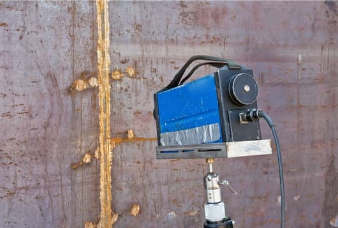
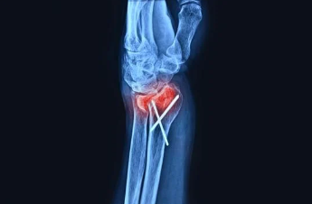
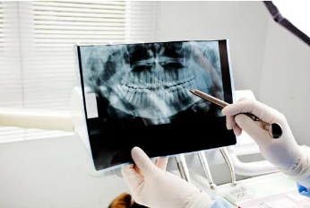
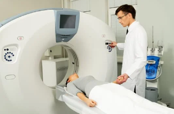
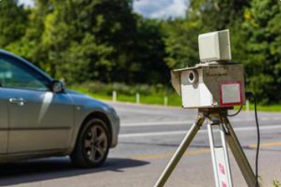

Ondas de Raio-x
- Definição:As ondas de raio-X são uma forma de radiação eletromagnética com comprimentos de onda que variam de 10-8 m (ou 0,01 nm) a 10-13 m (ou 0,0001 nm). Elas estão localizadas na parte alta do espectro eletromagnético, entre a radiação ultravioleta e a radiação gama.
- Frequência: As ondas de raio-X possuem frequências que vão de 1016 Hz a 1019 Hz, o que as torna altamente energéticas. Essa alta frequência é o que confere a capacidade de ionização, ou seja, a habilidade de remover elétrons de átomos e moléculas, levando à formação de íons.
- Aplicação:Diagnóstico médico (ex: radiografias), inspeção de segurança (ex: aeroportos), tomografia, mamografia, inspeção de soldagem, segurança em aeroportos.
- Efeito:Os raios-X são radiações de alta energia que penetram tecidos biológicos, úteis em diagnósticos e tratamentos. No entanto, a exposição excessiva pode danificar células e aumentar o risco de câncer, exigindo cuidado e proteção adequada.
- Inspeção de Segurança: Amplamente empregadas em aeroportos e pontos de controle de segurança para detectar objetos ocultos em bagagens.





